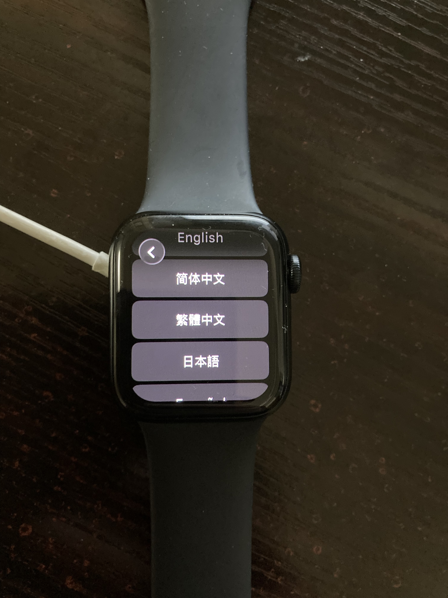
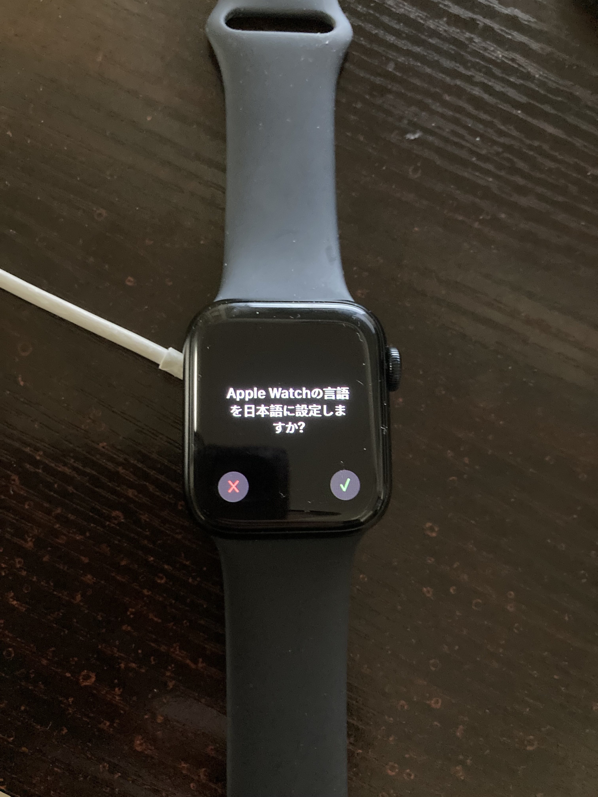
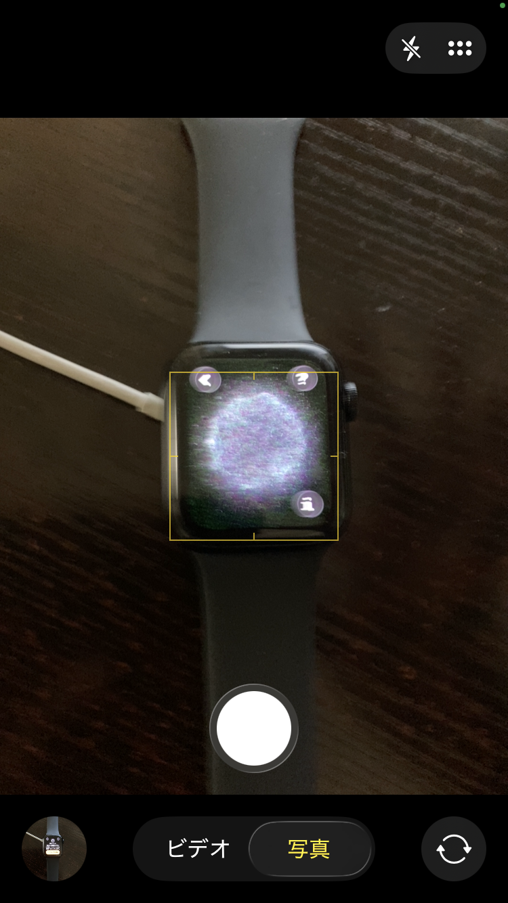
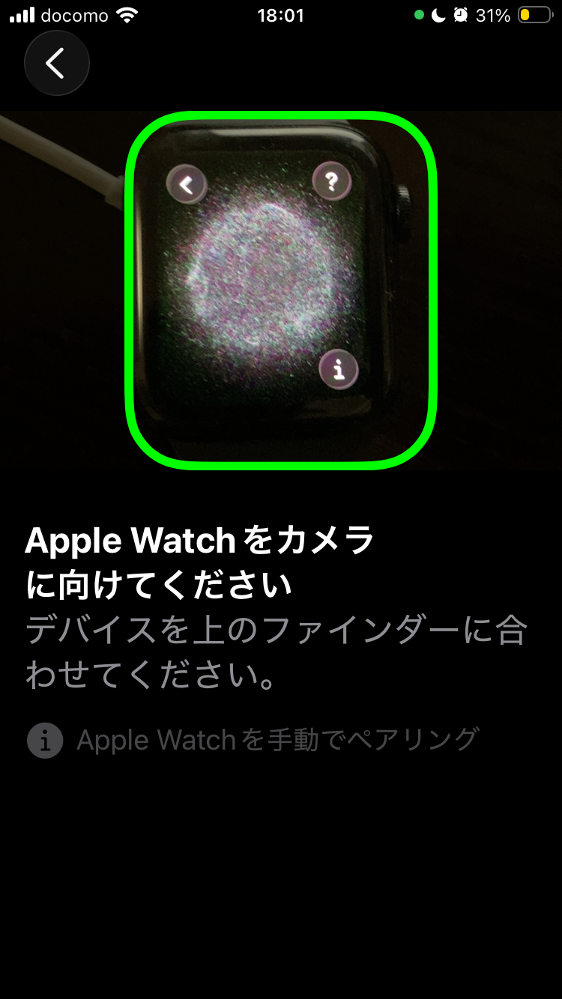
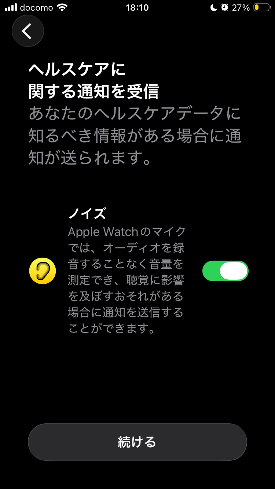
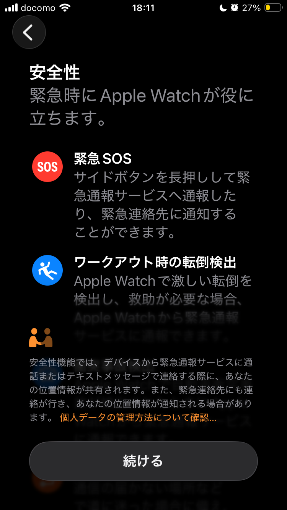
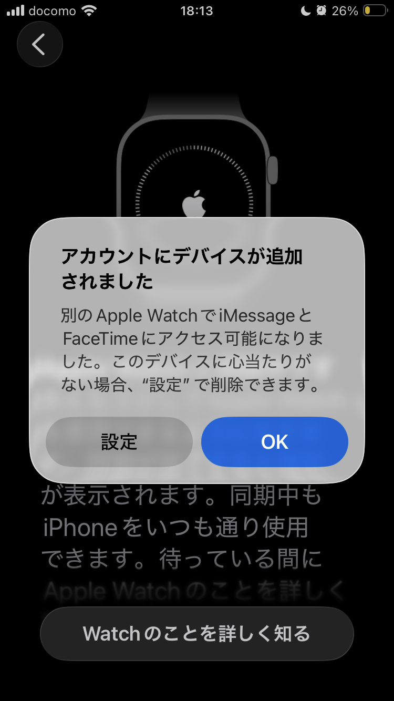
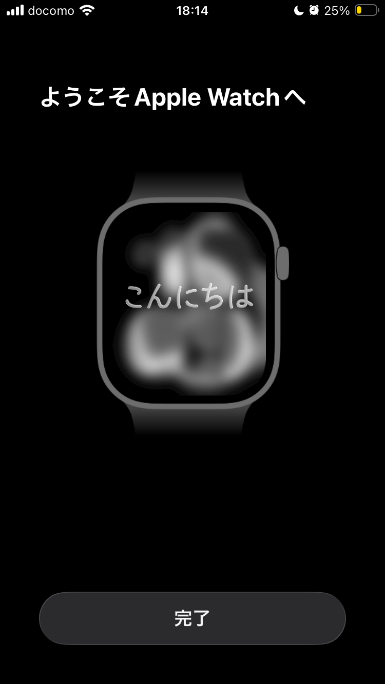

Apple Watch 初期設定手順書
1. 事前準備
- 始める前に、iPhoneを最新バージョンのiOSにアップデートしておきます。（例．iOS 26.3.1）
- iPhoneがWi-Fiかモバイル通信ネットワークでインターネットに接続されていることを確認します。
- iPhoneのBluetoothをオンにしておきます。
- 初期設定が終わるまで、iPhoneとApple Watchを近づけたままの状態にしておきます。
2. 電源を入れて言語と地域を選択する
- Apple Watchを腕につけ、デジタルクラウンの近くにあるサイドボタンを長押しして電源を入れます。
- 画面に言語の選択肢が表示されたら、「日本語」を選択します。


- 「地域を選択」画面で、「日本」を選択します。
3. iPhoneとペアリングする
- iPhoneをApple Watchに近づけると、「iPhoneを使用してこのApple Watchを設定」というメッセージが表示されるので、「続ける」をタップします。※Apple Watch側で「ペアリングを開始」をタップして進めることも可能です。
- 「自分用に設定」をタップします。
- iPhoneの背面カメラを使って、iPhoneの画面上のフレームにApple Watchが収まるように位置を調整します。


- しばらくすると「Apple Watchのペアリングが完了しました」と表示されます。
4. 新しいApple Watchとして設定（または復元）
- 初めての場合は「新しいApple Watchとして設定」をタップします。以前使っていたApple Watchのバックアップがある場合は、「バックアップから復元」をタップしてデータを転送することもできます。
5. 装着する腕とDigital Crownの位置を選択
- Apple Watchをどちらの腕に装着するか（左/右）を選択し、「続ける」をタップします。（右利きの人であれば左腕に装着することをおすすめします）
- Digital Crownを配置する側（上/下）を選択し、「続ける」をタップします。（右利きの人であればDigital Crownを上に配置することをおすすめします）
- アクティベート処理が行われます。
6. 各種設定とカスタマイズ
- 利用規約: 画面の利用規約に目を通し、「同意する」をタップします。
- パスコードの作成: 「パスコードを作成」をタップし、Apple Watchのパスコードを設定します。
- 文字の太さとサイズ: お好みのテキストスタイルを選択して、「続ける」をタップします。
- 共有される設定: 位置情報サービスなどがiPhoneと共有されることを確認し、「OK」をタップします。
- パーソナライズ: 生年月日、性別、身長などを入力し、フィットネスやヘルスケアのデータを設定します。
- 安全性と通知: ノイズの通知や、緊急SOS・転倒検出などの安全性機能の説明を確認し、「続ける」をタップします。


7. 同期と完了
- アカウントへのサインインが行われます。
- 「Apple Watchと同期中です」と表示されたら、同期が終わるまでiPhoneを近くに置いて待ちます。
- アカウントへのデバイス追加通知や「ようこそApple Watchへ」の画面が表示されたら、iPhone側で「完了」をタップします。


- Apple Watch側に「ようこそ」画面（文字盤）が表示されたら、初期設定は完了です。